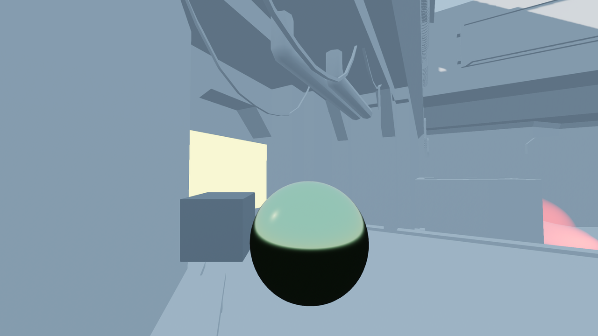

Sử dụng chiếu sáng toàn cục Voxel
VoxelGI là một dạng chiếu sáng toàn cục hoàn toàn theo thời gian thực, dành cho các scene 3D quy mô nhỏ/vừa. VoxelGI khá nặng đối với GPU, vì vậy nó phù hợp nhất khi nhắm đến card đồ họa rời.
Quan trọng
VoxelGI chỉ được hỗ trợ khi dùng renderer Forward+, không hỗ trợ renderer Mobile hay Compatibility.
Xem thêm
Không chắc VoxelGI có phù hợp với nhu cầu của bạn không? Xem Nên dùng kỹ thuật chiếu sáng toàn cục nào? để so sánh các kỹ thuật GI có trong Godot 4.
So sánh trực quan

VoxelGI tắt.

VoxelGI bật.
Thiết lập VoxelGI
Đảm bảo hình học tĩnh của màn chơi được import với tùy chọn Light Baking đặt thành Static hoặc Static Lightmaps trong dock Import. Với các node MeshInstance3D được thêm thủ công, hãy đảm bảo thuộc tính Global Illumination > Mode được đặt thành Static trong inspector.
Tạo một node VoxelGI trong dock cây Scene.
Di chuyển node VoxelGI đến tâm của vùng bạn muốn nó bao phủ bằng cách kéo gizmo thao tác trong viewport 3D. Sau đó điều chỉnh extents của VoxelGI bằng cách kéo các điểm màu đỏ trong viewport 3D (hoặc nhập giá trị trong inspector). Đảm bảo extents của VoxelGI không lớn quá mức cần thiết, nếu không chất lượng sẽ giảm.
Chọn node VoxelGI và nhấn Bake ở phía trên viewport của trình chỉnh sửa 3D. Quá trình này sẽ mất ít nhất vài giây để hoàn tất (tùy thuộc vào số lần chia nhỏ của VoxelGI và độ phức tạp của scene).
Nếu có ít nhất một mesh nằm trong extents của VoxelGI có chế độ chiếu sáng toàn cục đặt thành Static, bạn sẽ thấy ánh sáng gián tiếp xuất hiện trong scene.
Ghi chú
Để tránh làm phình to các file scene dạng văn bản bằng lượng lớn dữ liệu nhị phân, hãy đảm bảo resource VoxelGIData luôn được lưu vào một file nhị phân bên ngoài. File này phải được lưu với phần mở rộng .res (resource nhị phân) thay vì .tres (resource dạng văn bản). Dùng resource nhị phân bên ngoài cho VoxelGIData sẽ giữ scene dạng văn bản của bạn nhỏ gọn đồng thời đảm bảo nó được tải và lưu nhanh chóng.
Các thuộc tính của node VoxelGI
Các thuộc tính sau có thể được điều chỉnh trong inspector của node VoxelGI trước khi bake:
Subdiv: Giá trị cao hơn cho ánh sáng gián tiếp chính xác hơn, đổi lại hiệu năng thấp hơn, thời gian bake lâu hơn và yêu cầu lưu trữ tăng lên.
Extents: Biểu thị kích thước của hộp mà ánh sáng gián tiếp sẽ được bake bên trong. Extents được căn giữa quanh gốc tọa độ của node VoxelGI.
Các thuộc tính sau có thể được điều chỉnh trong resource VoxelGIData chứa trong một node VoxelGI sau khi nó đã được bake:
Dynamic Range: Độ sáng tối đa có thể biểu diễn trong ánh sáng gián tiếp. Giá trị cao hơn cho phép biểu diễn ánh sáng gián tiếp sáng hơn, đổi lại độ chính xác thấp hơn (có thể gây hiện tượng dải màu dễ thấy). Nếu không chắc, hãy giữ nguyên giá trị này.
Energy: Năng lượng tổng thể của ánh sáng gián tiếp. Thuộc tính này cũng ảnh hưởng đến năng lượng của ánh sáng trực tiếp do các mesh có material phát sáng phát ra.
Bias: Độ lệch (bias) tùy chọn được thêm vào các lần tra cứu buffer voxel lúc chạy. Điều này giúp tránh các lỗi hiển thị do tự che khuất.
Normal Bias: Tương tự Bias, nhưng dịch lần tra cứu buffer voxel theo pháp tuyến bề mặt. Điều này cũng giúp tránh các lỗi hiển thị do tự che khuất. Giá trị cao hơn làm giảm hiện tượng tự phản chiếu trên các material không nhám, đổi lại rò rỉ ánh sáng dễ thấy hơn và ánh sáng gián tiếp trông phẳng hơn. Để ưu tiên che giấu tự phản chiếu hơn chất lượng chiếu sáng, hãy đặt Bias thành
0.0và Normal Bias thành một giá trị trong khoảng1.0đến2.0.Propagation: Hệ số năng lượng dùng cho ánh sáng gián tiếp nảy lại. Giá trị cao hơn sẽ cho ánh sáng sáng hơn, khuếch tán hơn (có thể khiến trông quá phẳng). Khi Use Two Bounces được bật, bạn có thể muốn giảm Propagation để bù cho ánh sáng gián tiếp tổng thể sáng hơn.
Use Two Bounces: Nếu bật, ánh sáng sẽ nảy hai lần thay vì chỉ một lần. Điều này giúp ánh sáng gián tiếp trông chân thực hơn, và cũng làm ánh sáng gián tiếp hiển thị trong các phản chiếu. Bật tùy chọn này thường không tốn hiệu năng đáng kể.
Interior: Nếu bật, ánh sáng bầu trời của môi trường sẽ không được VoxelGI tính đến. Nên bật tùy chọn này trong các scene trong nhà để tránh rò rỉ ánh sáng từ môi trường.
Tương tác của VoxelGI với đèn và vật thể
Để đảm bảo hình ảnh hiển thị đúng khi dùng VoxelGI, bạn phải cấu hình các thuộc tính chiếu sáng toàn cục của mesh và đèn theo mục đích của chúng trong scene (tĩnh hoặc động).
Có 3 chế độ chiếu sáng toàn cục cho mesh:
Disabled: Mesh sẽ không được tính đến khi bake VoxelGI. Mesh sẽ nhận ánh sáng gián tiếp từ scene, nhưng sẽ không đóng góp ánh sáng gián tiếp cho scene.
Static (mặc định): Mesh sẽ được tính đến khi bake VoxelGI. Mesh sẽ vừa nhận vừa đóng góp ánh sáng gián tiếp cho scene. Nếu mesh bị thay đổi theo bất kỳ cách nào sau khi bake, node VoxelGI phải được bake lại. Nếu không, ánh sáng gián tiếp sẽ hiển thị sai.
Dynamic: Mesh sẽ không được tính đến khi bake VoxelGI, nhưng vẫn nhận và đóng góp ánh sáng gián tiếp cho scene theo thời gian thực. Tùy chọn này chậm hơn nhiều so với Static. Chỉ dùng chế độ chiếu sáng toàn cục Dynamic cho những mesh lớn sẽ thay đổi đáng kể trong lúc chơi.
Ghi chú
Với các mesh có chế độ bake Static, hệ thống bake VoxelGI không thể tận dụng shader tùy chỉnh (class_ShaderMaterial). Các mesh này sẽ được coi là hoàn toàn đen, chỉ đóng vai trò chặn ánh sáng. Bạn có thể khiến VoxelGI tính đến shader tùy chỉnh bằng cách dùng chế độ bake Dynamic cho các vật thể này, nhưng điều này tốn hiệu năng.
Với class_BaseMaterial3D, một số thuộc tính hiện bị bỏ qua khi bake. Điều này có thể ảnh hưởng đến hình ảnh nếu texture albedo hoặc emission của material được thiết kế dựa trên một số kiểu ánh xạ UV nhất định:
UV1 > Offset
UV1 > Scale
UV1 > Triplanar
Emission > On UV2
Ngoài ra, có 3 chế độ bake dành cho đèn (DirectionalLight3D, OmniLight3D, SpotLight3D và AreaLight3D):
Disabled: Đèn sẽ không được tính đến khi bake VoxelGI. Đèn sẽ không đóng góp ánh sáng gián tiếp cho scene.
Static: Đèn sẽ được tính đến khi bake VoxelGI. Đèn sẽ đóng góp ánh sáng gián tiếp cho scene. Nếu đèn bị thay đổi theo bất kỳ cách nào sau khi bake, node VoxelGI phải được bake lại, nếu không ánh sáng gián tiếp sẽ hiển thị sai. Nếu không chắc, hãy dùng chế độ này cho chiếu sáng của màn chơi.
Dynamic (mặc định): Đèn sẽ không được tính đến khi bake VoxelGI, nhưng vẫn đóng góp ánh sáng gián tiếp cho scene theo thời gian thực. Tùy chọn này chậm hơn so với Static. Chỉ dùng chế độ chiếu sáng toàn cục Dynamic cho những đèn sẽ thay đổi đáng kể trong lúc chơi.
Ghi chú
Lượng năng lượng gián tiếp mà một đèn phát ra phụ thuộc vào các thuộc tính màu, năng lượng và năng lượng gián tiếp của nó. Để một đèn cụ thể phát ra nhiều hoặc ít năng lượng gián tiếp hơn mà không ảnh hưởng đến lượng ánh sáng trực tiếp do đèn phát ra, hãy điều chỉnh thuộc tính Indirect Energy trong inspector của Light3D.
Xem thêm
Xem Nên dùng chế độ chiếu sáng toàn cục nào cho mesh và đèn? để biết các khuyến nghị sử dụng chung.
Điều chỉnh hiệu năng và chất lượng VoxelGI
Vì VoxelGI tương đối nặng, nó sẽ chạy tốt nhất trên các hệ thống có GPU rời đời mới. Trên GPU rời đời cũ và đồ họa tích hợp, cần tinh chỉnh các cài đặt để đạt hiệu năng chấp nhận được.
Trong mục Rendering > Global Illumination của Project Settings, chất lượng VoxelGI cũng có thể được điều chỉnh theo hai cách:
Voxel Gi > Quality: Nếu đặt thành Low thay vì High, voxel cone tracing sẽ chỉ dùng 4 lần lấy mẫu thay vì 6. Điều này tăng tốc kết xuất, đổi lại ambient occlusion kém rõ nét hơn.
Gi > Use Half Resolution: Nếu bật, cả VoxelGI và SDFGI sẽ kết xuất buffer GI ở một nửa độ phân giải. Ví dụ, khi kết xuất ở 3840×2160, buffer GI sẽ được tính ở độ phân giải 1920×1080. Bật tùy chọn này tiết kiệm rất nhiều thời gian GPU, nhưng có thể gây răng cưa dễ thấy quanh các chi tiết mảnh.
Lưu ý rằng nút bật Advanced phải được bật trong hộp thoại cài đặt dự án để các cài đặt trên hiển thị.
Ngoài ra, có thể tắt hoàn toàn VoxelGI bằng cách ẩn node VoxelGI. Điều này có thể dùng để so sánh hoặc để cải thiện hiệu năng trên các hệ thống cấu hình thấp.
Giảm rò rỉ ánh sáng và lỗi hiển thị của VoxelGI
Sau khi bake VoxelGI, bạn có thể nhận thấy ánh sáng gián tiếp bị rò rỉ ở một số chỗ trong hình học màn chơi. Có thể khắc phục điều này theo nhiều cách:
Với cả rò rỉ ánh sáng lẫn lỗi hiển thị, hãy thử di chuyển hoặc xoay node VoxelGI rồi bake lại.
Để chống rò rỉ ánh sáng nói chung, hãy đảm bảo hình học màn chơi được bịt kín hoàn toàn. Cách tốt nhất là làm việc này trong phần mềm dựng hình 3D dùng để thiết kế màn chơi, nhưng cũng có thể dùng các node MeshInstance3D nguyên thủy có chế độ chiếu sáng toàn cục đặt thành Static.
Để chống rò rỉ ánh sáng với hình học mỏng, nên làm cho phần hình học đó dày hơn. Nếu không thể, hãy thêm một node MeshInstance3D nguyên thủy có chế độ chiếu sáng toàn cục đặt thành Static. Bake lại VoxelGI, rồi ẩn node MeshInstance3D nguyên thủy đó (VoxelGI vẫn sẽ tính đến nó). Để có kết quả tối ưu, MeshInstance3D nên có một material với màu khớp với phần hình học mỏng ban đầu.
Để chống các lỗi hiển thị có thể xuất hiện trên bề mặt phản chiếu, hãy thử tăng Bias và/hoặc Normal Bias trong resource VoxelGIData như mô tả ở trên. Đừng tăng các giá trị này quá cao, nếu không rò rỉ ánh sáng sẽ trở nên rõ rệt hơn.
Nếu bạn thấy các node VoxelGI lúc hiện lúc mất khi camera di chuyển, nhiều khả năng là do engine đang kết xuất quá nhiều instance VoxelGI cùng lúc. Godot bị giới hạn kết xuất 8 node VoxelGI cùng lúc, nghĩa là tối đa 8 instance có thể nằm trong tầm nhìn camera trước khi một số bắt đầu nhấp nháy.
Ngoài ra, vì lý do hiệu năng, Godot chỉ có thể pha trộn giữa 2 node VoxelGI tại một pixel nhất định trên màn hình. Nếu bạn có nhiều hơn 2 node VoxelGI chồng lấn nhau, chiếu sáng toàn cục có thể bị nhấp nháy khi camera di chuyển hoặc xoay.